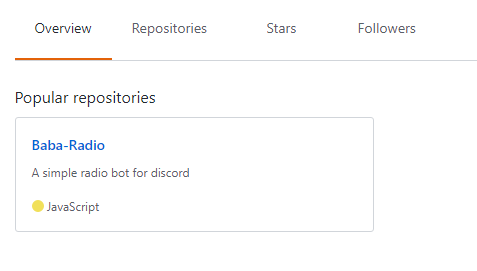

Instalación y uso de un editor de código
Creación de su cuenta App y de Bot
Instalación de Discord.js y Node.js
Introducción a un Bot de musica/audio ◄
La voz en discord.js se puede utilizar para muchas cosas, tales como un bots de la música, grabación o retransmisión de audio.
En discord.js, puede utilizar la voz conectándose a un Canal de voz para obtener una Conexión de Voz, donde puede iniciar la transmisión y recepción de audio.
Para empezar, asegúrese de tener instalados estos componentes:
En este ejemplo se unira a un canal de voz del remitente, esto es importante ya que nos permite obtener una VoiceConnection donde podemos empezar a transmitir audio.
if (command === 'join') {
let Canalvoz = message.member.voiceChannel;
if (!Canalvoz || Canalvoz.type !== 'voice') {
message.channel.send('¡Necesitas unirte a un canal de voz primero!.').catch(error => message.channel.send(error));
} else if (message.guild.voiceConnection) {
message.channel.send('Ya estoy conectado en un canal de voz.');
} else {
message.channel.send('Conectando...').then(m => {
Canalvoz.join().then(() => {
m.edit(':white_check_mark: | Conectado exitosamente.').catch(error => message.channel.send(error));
}).catch(error => message.channel.send(error));
}).catch(error => message.channel.send(error));
}
}Leave se usa para desconectar la app de un canal de voz donde esta conectado.
if (command === 'leave') {
let Canalvoz = message.member.voiceChannel;
if (!Canalvoz) {
message.channel.send('No estoy en un canal de voz.');
} else {
message.channel.send('Dejando el canal de voz.').then(() => {
Canalvoz.leave();
}).catch(error => message.channel.send(error));
}
}En el ejemplo anterior, observamos cómo unir a un canal de voz para obtener una VoiceConnection, ahora que hemos obtenido una conexión de voz, podemos iniciar la transmisión de audio en ella.
El siguiente ejemplo muestra cómo reproducir un archivo mp3 desde su PC, usando la función playFile.
if (commmand === 'play') {
if (!message.guild.voiceConnection) return message.channel.send('¡No estoy en un canal de voz!, use `-join` para unirme a un canal.').catch(error => message.channel.send(error));
const dispatcher = message.guild.voiceConnection.playFile(`C:/Users/Desktop/musica/audio.mp3`);
}Su archivo no tiene que ser sólo del formato .mp3, ffmpeg puede convertir videos y audios de muchos formatos.
Es una instancia de StreamDispatcher, que gestiona la transmisión de un recurso específico a un canal de voz. Podemos hacer muchas cosas con el dispatcher, como averiguar cuándo termina la reproducción, pausar, o cambiar el volumen:
dispatcher.on('end', () => {
// Se activa cuando la transmisión/canción ha terminado.
});
dispatcher.on('error', e => {
// Se activa cuando detecta cualquier error que pueda surgir.
console.log(e);
});
dispatcher.setVolume(0.5); // Ajuste el volumen a 50%
dispatcher.setVolume(1); // Ajuste el volumen de nuevo al 100%
dispatcher.time; // El tiempo en milisegundos durante la secuencias que ha estado en transmisión.
dispatcher.pause(); // Detener la secuencia transmisión
dispatcher.resume(); // Continuar la secuencia transmisión
dispatcher.end(); // Finaliza el dispatcher, emite evento 'end'
playStream convierte enlaces (URL's) en audio para poder reproducirlo en un canal de voz.
En este ejemplo veremos como reproducir enlaces (URL's) de youtube usando el package ytdl-core.
Instalar ytdl-core en la carpeta de su bot.
Ejemplo:
if (command === 'ytplay') {
const ytdl = require('ytdl-core');
let voiceChannel = message.member.voiceChannel;
if(!voiceChannel) return message.channel.send('¡Necesitas unirte a un canal de voz primero!.');
if(!args) return message.channel.send('Ingrese un enlace de youtube para poder reproducirlo.');
voiceChannel.join()
.then(connection => {
const url = ytdl(args, { filter : 'audioonly' });
const dispatcher = connection.playStream(url);
message.channel.send('Reproduciendo ahora: '+ args);
message.delete();
})
.catch(console.error);
}Modo de uso:
-ytplay [URL youtube]Así como puede reproducir URL's de youtube, tambien podemos reproducir estaciones de radios streaming usando .playStream( ) y crear bots de radios para su servidor.
Para este ejemplo usamos una estación de radio de musica electro, ustep puede elegir cualquier otro género ingresando a Radionomy que se encarga de listar estaciones de radio.
if (command === 'radio') {
let voiceChannel = message.member.voiceChannel;
if(!voiceChannel) return message.channel.send('¡Necesitas unirte a un canal de voz primero!.');
voiceChannel.join().then(conexion =>{
conexion.playStream('http://stream.electroradio.fm:80/192k/;');
message.channel.send('Radio electro activado.')
return;
})
.catch(console.error);
}¡Genial! ya tienes un bot reproduciendo radio streaming, recuerde que debe tener una buena conexión de red para que la transmisión vaya fluida y sin cortes.
Otra opcion de transmitir un URL de un archivo, puede utilizar .playArbitraryInput(), es menos eficiente que simplemente usar .playStream()
// Reproducir un mp3 desde una URL
conexion.playArbitraryInput('http://miweb.com/sonido.mp3');
Para mas funciones y clases de transmisión, usted puede consultar la documentación de Discord.js VoiceConnection.
Si ustep esta pensando en tener un bot de radio público, nuestro amigo perronosaurio(Waxtz)#1767 ha creado un Bot de radio de código abierto en github: Baba Radio, simple de descargar y con muchas caracteristicas.

Si tiene alguna pregunta y/o duda después de leer esta guía, ingrese al servidor guía en Discord: MyBOT - Server guía.
Sitio web github/Crater